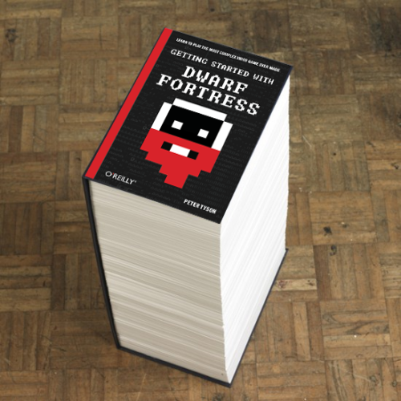
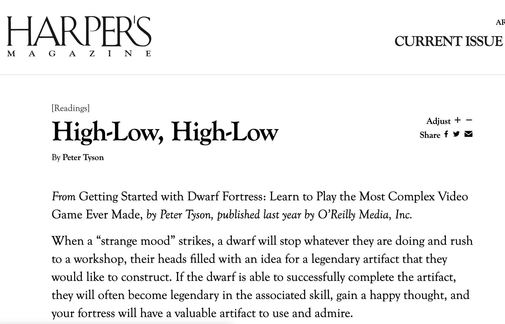

These are the books I’ve worked on at O’Reilly and Maker Media:
And my favorite: a Reddit fan’s remix of Peter Tyson's Dwarf Fortress book cover:

UPDATED 2013: Peter Tyson's book was excerpted in the Readings section of the March 2013 issue of Harpers!
